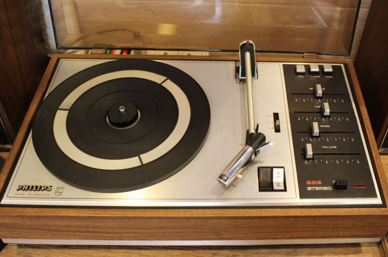

Sobre Nós - Conheça Nossa História:

A Retro Shop nasceu com a missão de resgatar o amor pelas mídias físicas. Em um mundo digitalizado, onde as músicas são consumidas de maneira efêmera e impessoal, nós acreditamos que o vinil, o CD e a fita cassete têm um valor muito além do formato. Eles representam uma conexão real com a música, uma sensação de nostalgia e autenticidade que apenas o toque físico pode oferecer.
Na Retro Shop, nossa curadoria é feita com carinho e dedicação, trazendo as melhores edições de discos, fitas e CDs que marcaram a história da música mundial. Desde os clássicos do rock até os maiores hits da música pop e eletrônica, temos o orgulho de resgatar essas relíquias para que novas gerações também possam apreciá-las. Junte-se a nós e faça parte dessa revolução retro!
FAQ
Quem somos?
A Retro Shop é uma loja que se dedica a reviver a magia das mídias físicas. Somos apaixonados por vinis, CDs e fitas cassete, e nossa missão é trazer de volta esses formatos, que têm um charme único e inesquecível. Em um mundo cada vez mais digital, acreditamos que as mídias físicas têm um valor histórico e emocional que merece ser preservado. Nossa equipe é composta por entusiastas da música e colecionadores que, assim como você, valorizam a experiência de ouvir um disco completo em sua forma original.
O que fazemos?
Na Retro Shop, oferecemos uma vasta seleção de discos de vinil, CDs e fitas cassete, com uma curadoria especial de álbuns de todos os tempos. Nós buscamos, restauramos e revendemos esses itens com o objetivo de proporcionar aos nossos clientes uma experiência única de resgatar a nostalgia e a qualidade da música física. Além disso, também trabalhamos com acessórios como agulhas de toca-discos, capas de vinil e outros itens que são essenciais para os amantes das mídias físicas.
Garantia
Temos um compromisso com a qualidade e a satisfação de nossos clientes. Todos os produtos da Retro Shop são cuidadosamente inspecionados e restaurados, sempre que necessário, para garantir que cheguem até você em perfeito estado. Caso algum item não esteja conforme o esperado, garantimos a troca ou devolução. Nosso objetivo é que cada compra seja uma experiência prazerosa e que você possa reviver a magia da música com total confiança.
Contato
Entre em contato com a Retro Shop e nos diga como podemos ajudar. Seja para tirar dúvidas sobre nossos produtos, fazer sugestões ou pedir um item específico que você deseja adicionar à sua coleção, estamos sempre prontos para ouvir você. Nossa equipe está disponível para esclarecer qualquer dúvida, e nos preocupamos em oferecer a melhor experiência de compra para nossos clientes.